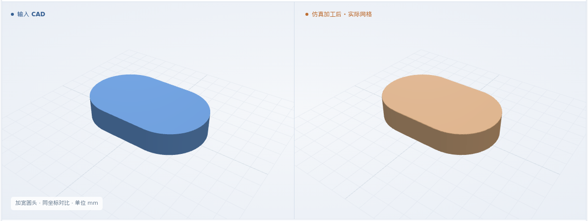
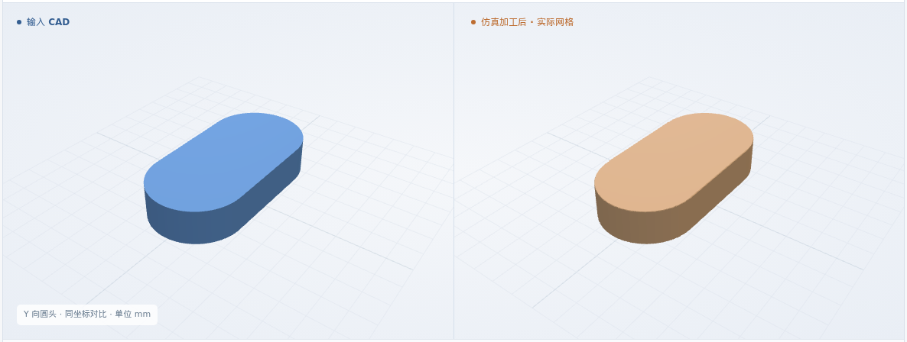
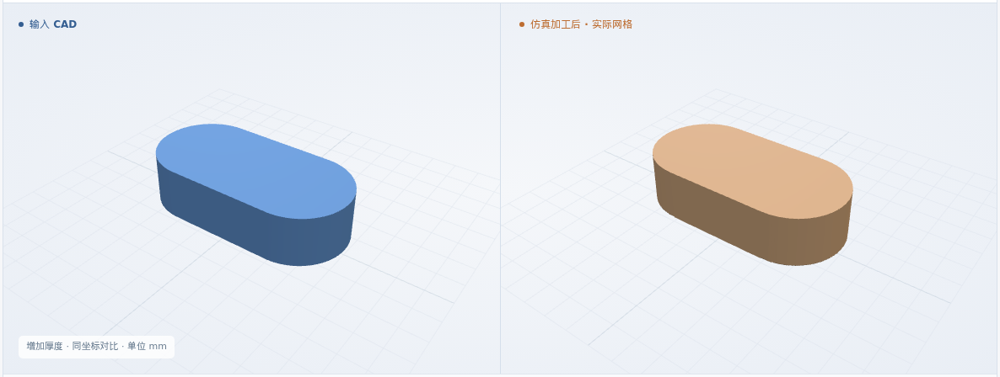
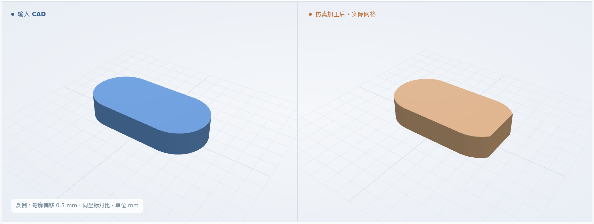
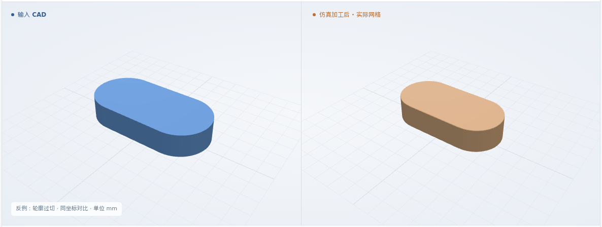
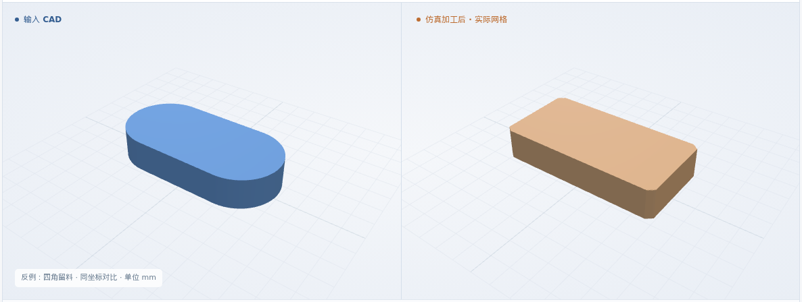
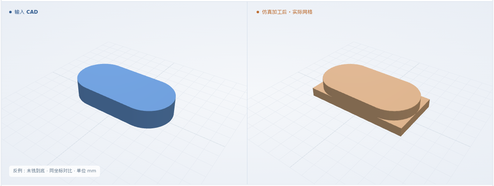

圆头外轮廓
长 8 × 宽 4 × 厚 1.5 mm · 两端 R2 · 长轴 X
最终网格 0.025 mm
体积 IoU99.6512%

本次新增：FreeCAD 原生外轮廓加工 · 完整外形及保留面检查 · 四角余料全厚清空检查
体积 IoU = 原 CAD 与实际剩料的交集 / 并集
长 8 × 宽 4 × 厚 1.5 mm · 两端 R2 · 长轴 X
最终网格 0.025 mm
长 8 × 宽 5 × 厚 1.5 mm · 两端 R2.5 · 长轴 X
最终网格 0.025 mm

长 8 × 宽 4 × 厚 1.5 mm · 两端 R2 · 长轴 Y
最终网格 0.025 mm

长 8 × 宽 4 × 厚 2 mm · 两端 R2 · 长轴 X
最终网格 0.025 mm

四个合成圆头板：改变宽度、XY 方向或厚度。通用 XYZ · φ2 平底铣刀 · 6061-T6 标签 · 最终网格 0.025 mm。
矩形毛坯 → 外侧首圈 → 逐层清除四角 → 全厚完成
三维回放暂不可用；上方实际图片和形状下载仍可查看。
原 CAD 长 8、宽 4、厚 1.5 mm，两端 R2；其余用例复用三个模块
核对轮廓、来料和刀具；确认单圈扫掠能清除全部外侧余料，并明确层间动作。
准备检查通过 ↗重读原 CAD；检查外侧刀具偏移、每层闭合、进给、切深及四角覆盖。原 NC 保持不变。
NC 与工艺卡一致 ↗实际执行 NC；全部剩料与原 CAD 比较，再检查完整轮廓、保留厚度与平面、外侧全厚清空。
实际去料与几何检查 ↗11 层完整外轮廓、25 个内部厚度 / 平面点、四角共 20 条余料探测线。轮廓与平面允许量 0.1 mm，厚度 ±0.1 mm，数值保护带 0.05 mm。IoU 包含全部实际材料；不删除外侧残块，不移动或缩放结果。
软件条件 ↗ · 完整结果 ↗制造验收依据仍待补齐；粗糙度、真实装夹和材料物理尚未验证。
正常入口先拒绝错误 NC，专用反例再实际执行去料。整体 IoU 与外形、余料检查分别记录。
只修改 NC；与对应正常例的原 CAD 比较
最终网格 0.025 mm

只修改 NC；与对应正常例的原 CAD 比较
最终网格 0.025 mm

只修改 NC；与对应正常例的原 CAD 比较
最终网格 0.025 mm

只修改 NC；与对应正常例的原 CAD 比较
最终网格 0.025 mm

S4 尚未全部完成；后续范围统一列在 S4 总览。